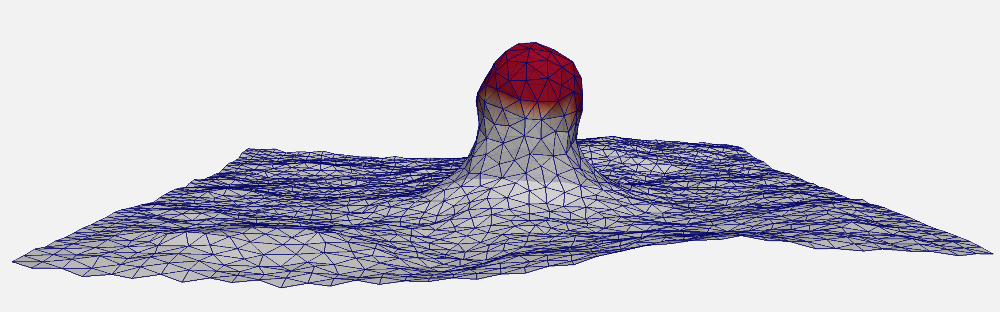
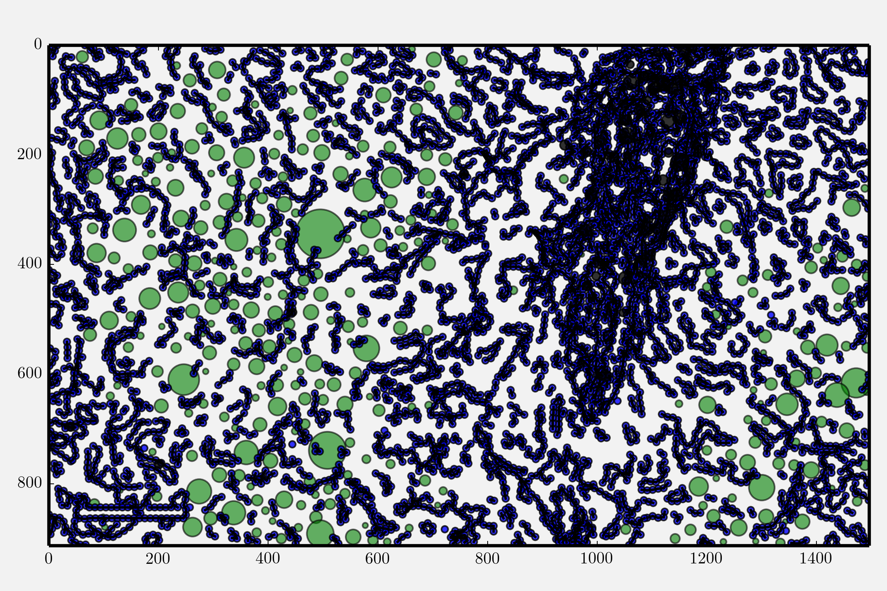

Research
Curvature Generation in Cell Membranes
My research has included the development of a cell membrane model which can capture transitions between morphological states due to membrane proteins which induce curvature, such as the formation of a budding vesicle in the cellular process of endocytosis.
Membrane Tension and the Forces between Cells
The adhesion proteins which hold the cell membrane to both its cytoskeleton and the surrounding extracellular matrix can influence membrane tension and possibly alter signalling and cell fate.
Tissue Stresses: what can be learned computationally from histological slides ?
Stresses that arise in tissues either as a product of a disease state or in the development of disease may be seen through the packing of tissue features.
Publications
- N. Ramakrishnan, R. W. Tourdot, D. M. Eckmann, P. S. Ayyaswamy, V. R. Muzykantov, R. Radhakrishnan, Biophysically inspired model for functionalized nanocarrier adhesion to cell surface: roles of protein expression and mechanical factors. (2016) R. Soc. Open. Sci. in press
- N. Ramakrishnan, R. W. Tourdot, R. Radhakrishnan, Thermodynamic Free Energy Methods to Investigate Shape Transitions In Bilayer Membranes. (2016) Int. J. Adv. Eng. Sci. & Appl. Math. [link]
- R. W. Tourdot, N. Ramakrishnan, T. Baumgart, and R. Radhakrishnan, Application of a Free Energy Landscape Approach to Study Tension Dependent Bilayer Tubulation Mediated by Curvature Inducing Proteins. (2015) Phys. Rev. E. 92, 042715 [link]
- R. W. Tourdot, R. P. Bradley, N. Ramakrishnan, and R. Radhakrishnan, (2014) Multiscale computational models in physical systems biology of intracellular trafficking. IET Systems Biology 8(5) 198-213. [link]
- R. W. Tourdot, N. Ramakrishnan, and R. Radhakrishnan, Defining the free-energy landscape of curvature-inducing proteins on membrane bilayers. (2014) Phys. Rev. E. 90, 022717 [link]
- D. R. Slochower, Y. Wang, R. W. Tourdot, R. Radhakrishnan, and P. A. Janmey, Counterion-mediated pattern formation in membranes containing anionic lipids. (2014) Advances in Colloid and Interface Science 208 177-188. [link]
- J. Liu, R. Tourdot, V. Ramanan, N. J. Agrawal and R. Radhakrishnan, Mesoscale Modeling and Simulations of Spatial Partitioning of Curvature Inducing Proteins under the Influence of Mean Curvature Fields in Bilayer Membranes. (2012) Molecular Physics 110(11-12), 1127-1137. [link]
- M. C. Linak, R. Tourdot, K. D. Dorfman, Moving Beyond Watson-Crick models of coarse grained DNA dynamics. (2011) J. Chem. Phys. 135 205102. [link]
Contact
- email: rwtourdot@gmail.com
- github
- Resume: PDF